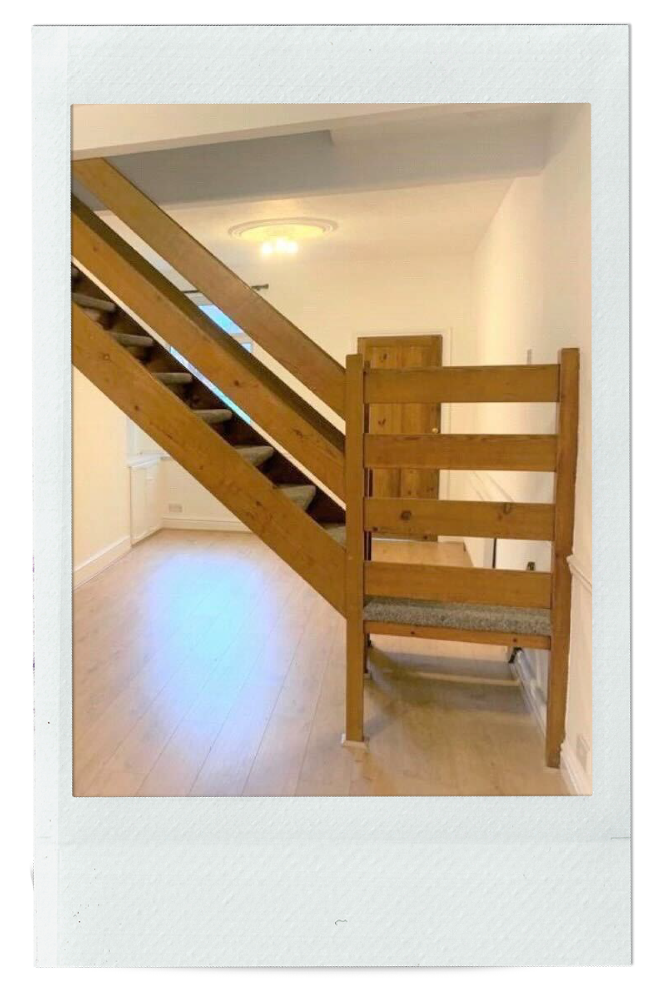
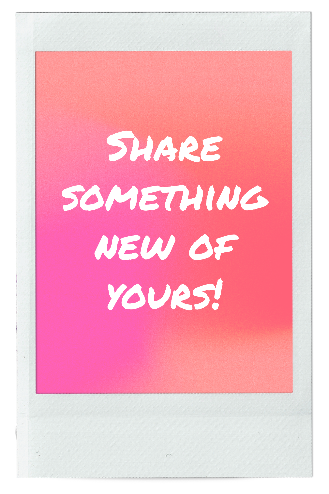

Red rose

X-mas tarantula

Rose plant

Bracelets

Black girl art

To the Underworld

Empty house

. . .
We are just super excited about buying new things because there is always some unexplicable feeling that draws us to these objects. Whether it's a beautiful plant or a cute little jewellery we know we are going to create an individual story as we get attached to our own unique posessions. Click on cards to reveal the stories behind objects!
Red rose
X-mas tarantula
Rose plant
Bracelets
Black girl art
To the Underworld
Empty house
. . .
This red rose, in full blossom, put a smile on my face a couple of days ago! I have always enjoyed the beautiful flowers in my parents garden and love to see what new blossoms I can find every time I visit. This time, I found this perfect red rose, reminding me of "Beauty and the Beast"! — Victoria
Can we classify something I bought this Christmas as new? Not really sure... I was however simply captivated by the beauty of this shockingly unusual Christmas ornament. I bet none of you have
a Christmas tarantula laying around in your house.
— Niki
Rose plant — Lydia
I was given both these bracelets from students during my first year of teaching, one is from a year 3 student and the other one from a year 5. I love it when my students make me little things like these as it makes me feel appreciated! — Lucy
The black girl art, that describes everything about me, it shows my style, looking at the art is like meeting me already, cause it symbolises me.
— Christabel
This is the newest addition to my ticket collection (thank God they sent a physical one). If I had to list the best gigs I ever went to, and which had a big influence on me, Underworld would definitely compete for the top positions. I had known the band for years (thanks to Trainspotting), and I always loved them. They were my gateway to dance music. But at this gig, I discovered them from a different perspective. I was feeling a bit down before it, and afterwards, I left with my inner battery overflowing and feeling so inspired to do things. It brought back my joy for creativity, and I lost myself again in artsy experiments. I could relate a lot to the band's creative process too, even though they do music and I do visual arts. So, for me, this ticket represents
a new chapter in my creative endeavours, a refreshed start. A new-ish me. — Dominyka
The empty house represents something new. This was a big move for me to a new city. Although there were doubts and fears, these feelings were overshadowed by excitement and anticipation.
— Lucy
If you would like to share "something new" of
yours, please go here to submit your picture! Don't forget to add your name and a brief description of the object. Once we review, it will be uploaded to
this gallery!